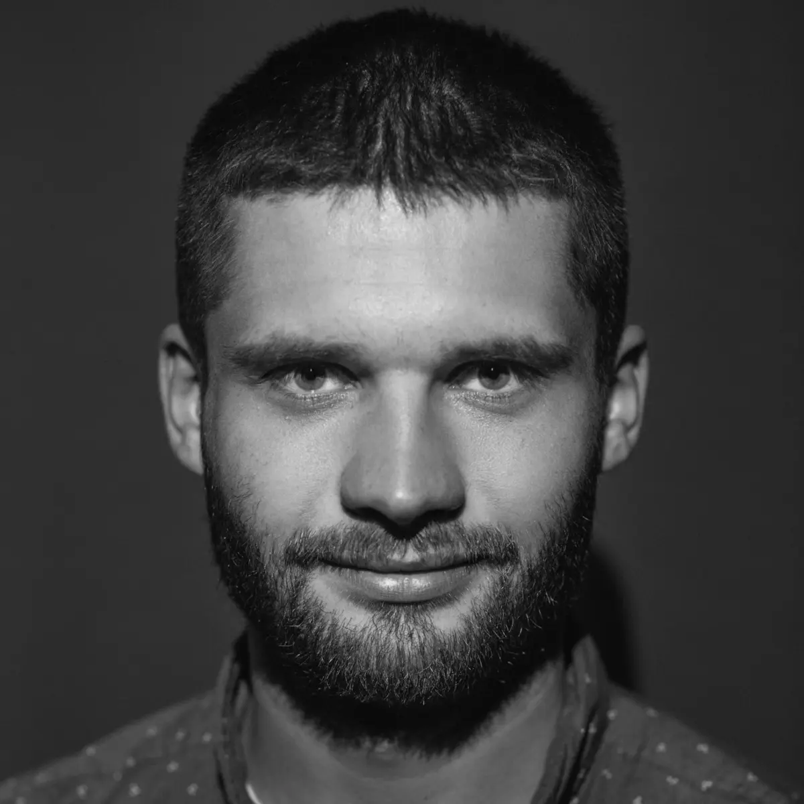
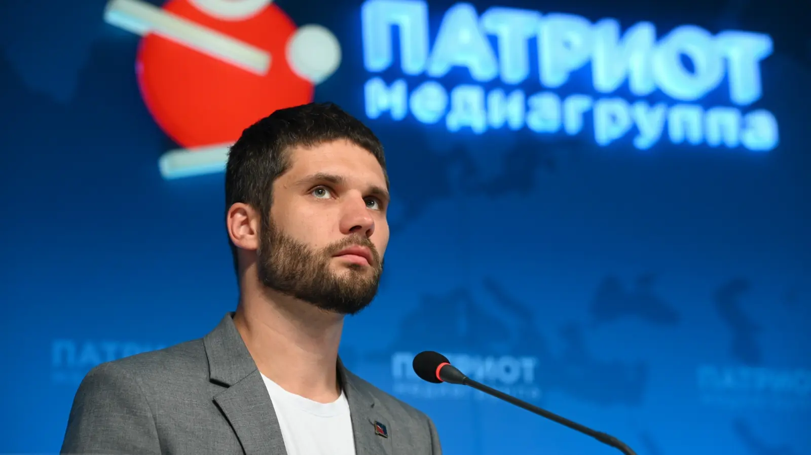
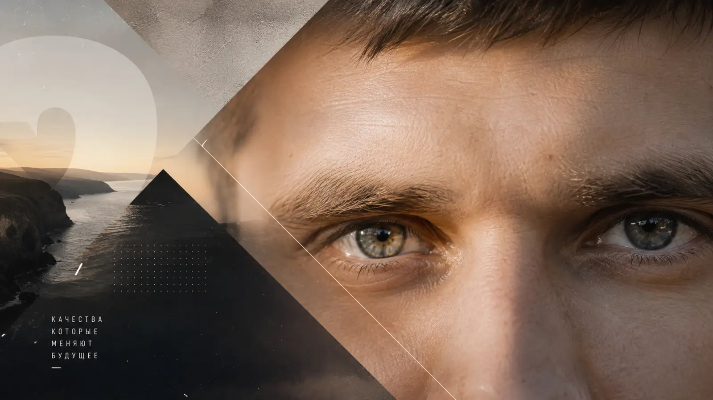

Крым · общественные и проектные инициативы
Алексей
Горшков
Общественный деятель · руководитель РЭО Крым · ветеран боевых действий · оператор ИИ
Соединяю людей, идеи, технологии и территории. Развиваю проекты, в которых общественная польза, ответственность и практический результат усиливают друг друга.

Социальный статус
Роли, в которых важно приносить пользу.
Общественная работа, ветеранское сообщество, просвещение и развитие территорий для меня не отдельные линии — это единая система ответственности перед людьми и будущим региона.
Экология
Руководитель РЭО Крым
Руководитель регионального отделения Российского экологического общества по Республике Крым с 2024 года.
Служение
Ветеран боевых действий
Доброволец 2023 года. Опыт управления подразделением БПЛА, информационной и гуманитарной работы.
Поддержка
«Равный равному»
Выпускник программы МГУ имени М. В. Ломоносова и Народного фронта по взаимной поддержке ветеранов.
Будущее
Русское космическое общество
Действительный член общества. Развитие инициатив, связанных с космической историей Керчи и Бухтой Космонавтов.
Молодёжь
Юнармия и «Движение первых»
Член штаба Юнармии Керчи, участник молодёжных и воспитательных проектов, встреч и социальных практик.
Сообщества
Ветеранское и медийное объединение
Участник ветеранского сообщества Крыма и руководитель медиацентра «Точка притяжения Крым».
Опыт
От коммуникаций и просвещения — к управлению сложными проектами.
Опыт формировался в разных средах: медиа, образование, общественная работа, служба, экология и предпринимательские проекты. Это позволяет видеть задачу целиком и связывать людей с понятным планом действий.
-
2016–2022
Медиа, кино и воспитательные проекты
Продвижение и развитие проекта «Киноуроки в школах России», работа с регионами, педагогами, общественными организациями и социальными практиками.
-
2023
Служба, БПЛА и работа в полевых условиях
Командир отделения БПЛА. Управление людьми и техникой, информационное сопровождение и гуманитарная работа в среде высокой ответственности.
-
2024–2026
Экология и общественные инициативы Крыма
Руководство РЭО Крым, экологическое просвещение, общественный диалог и участие в координации добровольческой помощи при ликвидации последствий разлива мазута.
-
Сегодня
Территории, сообщества и искусственный интеллект
Концепции туристических проектов, презентации, сайты, общественные кампании и внедрение ИИ в создание контента и управленческие процессы.

Компетенции
Собираю проект от идеи до публичного результата.
Сильная сторона — не один узкий инструмент, а способность соединить стратегию, людей, содержание, визуальную подачу и технологию в работающую систему.
Стратегия и управление проектами
Цели, дорожные карты, роли, приоритеты, контроль исполнения и упаковка решений.
Общественные коммуникации
Позиции, обращения, партнёрские письма, выступления, информационные кампании и работа со СМИ.
Экологические инициативы
Просвещение, общественный мониторинг, добровольческие практики и взаимодействие с органами власти.
Сообщества и партнёрства
Поиск точек объединения, запуск совместных проектов и координация людей с разными интересами.
Развитие территорий
Концепции, сценарии использования, презентационные материалы и коммуникация с партнёрами и инвесторами.
Оператор ИИ
ИИ и цифровое производство
Постановка задач моделям, создание текстов, изображений, видео, музыки, сайтов, презентаций и рабочих прототипов.
Медиа и визуальная упаковка
Редактура, сторителлинг, дизайн-концепции, социальные сети и материалы для публичной презентации.
Образование и наставничество
Педагогика дополнительного образования, воспитательные практики, работа с молодёжью и ветеранами.

Проекты
Направления, которые уже объединяют людей и ресурсы.
Российское экологическое общество — Крым
Экопросвещение, общественный диалог, добровольческие инициативы и партнёрство ради экологической безопасности региона.
Открыть сообществоГоризонт 45
Концепция экологичного туристического пространства у Бухты Космонавтов: архитектура, маршруты, море и общественные функции.
Киноуроки в школах России
Воспитательная технология, где фильм становится началом разговора, а разговор — полезным социальным поступком.
Точка притяжения Крым
Медиацентр и проектная среда для инициатив, которым нужны содержательная упаковка, партнёры и публичность.
«Равный равному»
Поддержка возвращающихся домой через личный опыт, доверие, сопровождение и включение в созидательную мирную жизнь.
Космическая Керчь
Инициативы вокруг Бухты Космонавтов, астероида «Керчь» и космической истории города к его 2650-летию.
Сотрудничество
Есть задача, которой нужен смысл, команда и сильная подача?
Открыт к общественным, экологическим, медийным и проектным партнёрствам, которые создают измеримую пользу для людей и территорий.
Обсудить проект